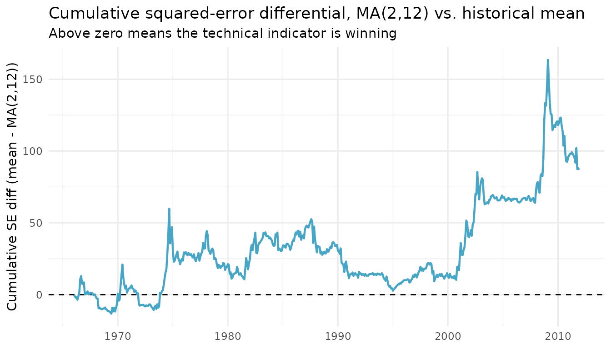

Clark-West Tests on Equity Premium Forecasts
Source:vignettes/cw-equity-premium.Rmd
cw-equity-premium.RmdThis article applies the Clark-West (2007) MSFE-adjusted test –
exposed by forecastdom as cw_test() – to
two classic equity premium forecasting datasets bundled with the
package:
-
rz2013– the 14 Goyal-Welch macroeconomic predictors used in Rapach and Zhou (2013), Forecasting Stock Returns, Handbook of Economic Forecasting, Vol. 2A, Chapter 6. -
nrtz2014– the 14 binary technical indicators (moving averages, momentum, on-balance volume) of Neely, Rapach, Tu, and Zhou (2014), Forecasting the Equity Risk Premium, Management Science.
The benchmark in both exercises is the prevailing historical mean of the equity premium – the standard “no predictability” null in this literature – and the alternatives are bivariate predictive regressions on each single predictor.
A reusable forecasting helper
The same recursive (expanding-window) loop is used for every predictor. At each forecast date , the historical-mean benchmark uses ; the alternative regresses on and forecasts using .
recursive_forecasts <- function(y, x, R) {
T_ <- length(y)
P <- T_ - R
e1 <- e2 <- f1 <- f2 <- numeric(P)
for (j in seq_len(P)) {
# estimation sample: rows 1..(R+j-1); forecast target: row R+j
train_y <- y[1:(R + j - 1)]
train_x <- x[1:(R + j - 1)]
# benchmark: prevailing mean of y observed up to t
f1[j] <- mean(train_y)
# alternative: y_t = a + b * x_{t-1} + e
fit <- lm(yt ~ xlag, data = data.frame(
yt = train_y[-1],
xlag = train_x[-length(train_x)]
))
f2[j] <- as.numeric(stats::predict(
fit, newdata = data.frame(xlag = train_x[length(train_x)])
))
e1[j] <- y[R + j] - f1[j]
e2[j] <- y[R + j] - f2[j]
}
list(e1 = e1, e2 = e2, f1 = f1, f2 = f2, P = P)
}Macro predictors (Rapach & Zhou, 2013)
We use the first 241 monthly observations (1926-12 through 1946-12) as the initial estimation window and evaluate the next 768 months (1947-01 through 2010-12).
y_rz <- rz2013$eq_prem
preds_rz <- setdiff(names(rz2013), c("date", "eq_prem"))
R_rz <- 241L
cw_rz <- lapply(preds_rz, function(p) {
fc <- recursive_forecasts(y_rz, rz2013[[p]], R = R_rz)
res <- cw_test(fc$e1, fc$e2, fc$f1, fc$f2)
data.frame(
predictor = p,
R2OS_pct = unname(res$r2os),
CW_stat = unname(res$statistic),
p_value = unname(res$pvalue)
)
})
cw_rz <- do.call(rbind, cw_rz)
cw_rz <- cw_rz[order(-cw_rz$CW_stat), ]
knitr::kable(cw_rz, digits = 3, row.names = FALSE,
caption = "Clark-West test, macro predictors vs. historical mean (rz2013)")| predictor | R2OS_pct | CW_stat | p_value |
|---|---|---|---|
| DY | -0.136 | 1.850 | 0.032 |
| DP | 0.129 | 1.621 | 0.053 |
| EP | -1.452 | 1.469 | 0.071 |
| LTY | -0.815 | 1.392 | 0.082 |
| TBL | -0.043 | 1.308 | 0.095 |
| TMS | 0.067 | 1.041 | 0.149 |
| SVAR | 0.287 | 0.986 | 0.162 |
| BM | -1.335 | 0.787 | 0.216 |
| NTIS | -0.761 | 0.311 | 0.378 |
| INFL_lag | -0.086 | 0.047 | 0.481 |
| DFR | -0.268 | -0.090 | 0.536 |
| LTR | -0.791 | -0.177 | 0.570 |
| DE | -1.587 | -0.347 | 0.636 |
| DFY | -0.179 | -1.104 | 0.865 |
A positive R2OS_pct indicates the alternative model has
a lower out-of-sample MSFE than the historical-mean benchmark; the
Clark-West t-statistic is compared to a one-sided standard
normal under
.
Technical indicators (Neely et al., 2014)
The technical indicators are binary signals constructed from S&P 500 prices and volume. We use the first 181 observations (1950-12 through 1965-12) as the initial estimation window and evaluate the next 552 months (1966-01 through 2011-12), matching the paper.
y_nr <- nrtz2014$eq_prem
preds_nr <- setdiff(names(nrtz2014), c("date", "eq_prem"))
R_nr <- 181L
cw_nr <- lapply(preds_nr, function(p) {
fc <- recursive_forecasts(y_nr, nrtz2014[[p]], R = R_nr)
res <- cw_test(fc$e1, fc$e2, fc$f1, fc$f2)
data.frame(
predictor = p,
R2OS_pct = unname(res$r2os),
CW_stat = unname(res$statistic),
p_value = unname(res$pvalue)
)
})
cw_nr <- do.call(rbind, cw_nr)
cw_nr <- cw_nr[order(-cw_nr$CW_stat), ]
knitr::kable(cw_nr, digits = 3, row.names = FALSE,
caption = "Clark-West test, technical indicators vs. historical mean (nrtz2014)")| predictor | R2OS_pct | CW_stat | p_value |
|---|---|---|---|
| VOL_1_12 | 0.799 | 1.757 | 0.039 |
| MA_2_12 | 0.779 | 1.693 | 0.045 |
| VOL_3_12 | 0.709 | 1.681 | 0.046 |
| MA_1_12 | 0.633 | 1.518 | 0.065 |
| MA_3_9 | 0.414 | 1.406 | 0.080 |
| VOL_2_9 | 0.442 | 1.356 | 0.088 |
| VOL_1_9 | 0.403 | 1.251 | 0.105 |
| MA_2_9 | 0.324 | 1.157 | 0.124 |
| VOL_2_12 | 0.331 | 1.121 | 0.131 |
| MA_1_9 | 0.235 | 0.981 | 0.163 |
| MOM_12 | 0.154 | 0.686 | 0.247 |
| MA_3_12 | 0.077 | 0.634 | 0.263 |
| MOM_9 | 0.108 | 0.613 | 0.270 |
| VOL_3_9 | 0.014 | 0.457 | 0.324 |
Most technical indicators deliver positive R²OS and Clark-West statistics that are significant at conventional levels, consistent with the headline finding of Neely et al. (2014): simple price-based and volume-based signals contain economically meaningful information for the equity premium.
A single deep-dive: MA(2, 12)
fc_ma <- recursive_forecasts(nrtz2014$eq_prem, nrtz2014$MA_2_12, R = R_nr)
cw_test(fc_ma$e1, fc_ma$e2, fc_ma$f1, fc_ma$f2)
#>
#> ╭────────────────────────────────────────────────────╮
#> │ Clark-West Test (2007) │
#> ├────────────────────────────────────────────────────┤
#> │ H0: Benchmark MSFE <= Alternative MSFE │
#> │ H1: Alternative model is superior (R2OS > 0) │
#> ├┄┄┄┄┄┄┄┄┄┄┄┄┄┄┄┄┄┄┄┄┄┄┄┄┄┄┄┄┄┄┄┄┄┄┄┄┄┄┄┄┄┄┄┄┄┄┄┄┄┄┄┄┤
#> │ Test Results: │
#> │ CW statistic: 1.6925 │
#> │ P-value (one-sided): 0.0453 │
#> │ R2OS (%): 0.78 │
#> ├┄┄┄┄┄┄┄┄┄┄┄┄┄┄┄┄┄┄┄┄┄┄┄┄┄┄┄┄┄┄┄┄┄┄┄┄┄┄┄┄┄┄┄┄┄┄┄┄┄┄┄┄┤
#> │ Details: │
#> │ Observations (n): 552 │
#> │ Reference distribution: N(0,1) │
#> ╰────────────────────────────────────────────────────╯The cumulative squared-error differential (Goyal-Welch, 2008) tracks when the predictor outperforms the historical mean. An upward- sloping line means the technical indicator is doing better; the steep gains tend to cluster around recessions, exactly the regime documented by Neely et al. (2014).
oos_dates <- tail(nrtz2014$date, fc_ma$P)
loss_diff <- fc_ma$e1^2 - fc_ma$e2^2
ggplot(data.frame(date = oos_dates, cum = cumsum(loss_diff)),
aes(date, cum)) +
geom_hline(yintercept = 0, linetype = "dashed") +
geom_line(colour = "#47A5C5", linewidth = 0.8) +
labs(x = NULL,
y = "Cumulative SE diff (mean - MA(2,12))",
title = "Cumulative squared-error differential, MA(2,12) vs. historical mean",
subtitle = "Above zero means the technical indicator is winning") +
theme_minimal(base_size = 11)
Takeaways
-
cw_test()is a one-line drop-in for any expanding-window equity premium forecasting exercise: feed it the two error series and the two forecast series, and read off the MSFE-adjusted statistic, the one-sided p-value, and . - For the Goyal-Welch macro predictors (
rz2013), out-of-sample gains over the historical mean are economically modest and only a handful of predictors are significant – the well-known “Goyal-Welch puzzle”. - For the technical indicators (
nrtz2014), most signals deliver positive with significant Clark-West statistics, in line with the central message of Neely et al. (2014).
References
- Clark, T. E. and West, K. D. (2007). Approximately normal tests for equal predictive accuracy in nested models. Journal of Econometrics, 138(1), 291-311.
- Goyal, A. and Welch, I. (2008). A comprehensive look at the empirical performance of equity premium prediction. Review of Financial Studies, 21(4), 1455-1508.
- Neely, C. J., Rapach, D. E., Tu, J., and Zhou, G. (2014). Forecasting the equity risk premium: The role of technical indicators. Management Science, 60(7), 1772-1791.
- Rapach, D. E. and Zhou, G. (2013). Forecasting stock returns. In G. Elliott and A. Timmermann (Eds.), Handbook of Economic Forecasting, Vol. 2A, pp. 328-383. Elsevier.